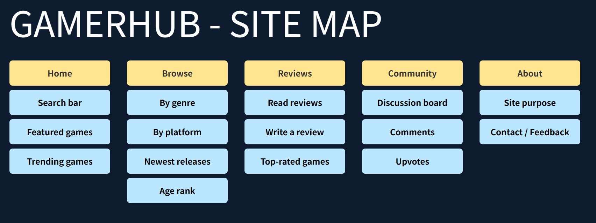

- Quickly find games of interest
- Filter and browse by genre, platform, newest releases
- Accessible on both mobile and desktop
- View and write user reviews
- Engage in community discussions and upvotes
- As a player, I want to quickly find games by searching.
- As a novice, I want to browse games by genre or platform.
- As an experienced player, I want to read other players’ reviews to make informed decisions.
- As an enthusiastic player, I want to write and share my own game reviews.
- As a community member, I want to ask questions, reply, and upvote in discussion boards.
- Use semantic HTML for screen reader compatibility
- Support full keyboard navigation (Tab/Enter)
- Maintain high contrast ratios (WCAG AA ≥ 4.5:1)
- Apply ARIA attributes (aria-expanded, aria-controls) for dynamic elements
- Ensure responsive design and avoid horizontal scrolling
- Provide clear feedback for actions (loading, completion)
- Ensure discoverability of core features (search, categories, review entry)
- Maintain visual and interaction consistency across the site
- Minimize cognitive load with clear information hierarchy
- Design large, tappable areas for mobile usability